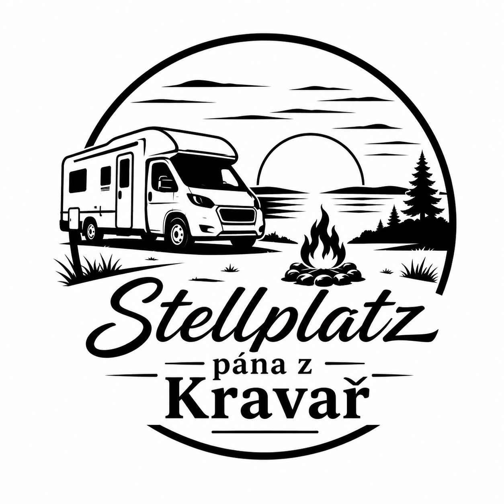
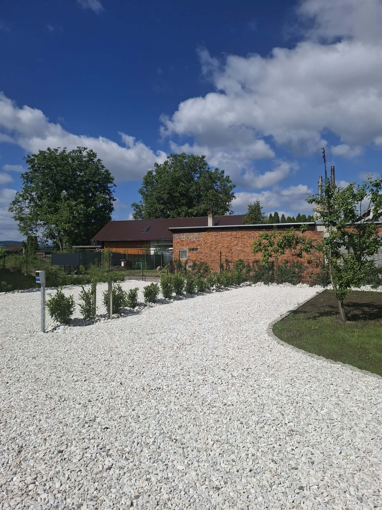

Dvě stání. Maximum klidu.
Klidné a bezpečné místo pro karavanisty v oploceném areálu v příjemné části Kravař.
Vítejte ve Stellplatzu pána z Kravař – místě pro karavanisty, kteří hledají pohodlné zázemí, příjemnou atmosféru a dostatek soukromí. Díky malé kapacitě nabízí areál klid, bezpečí a individuální přístup.

Dominanta města Kravaře a jeden z nejkrásnějších barokních zámků v regionu.
Co zde najdete:
Vzdálenost: přibližně 5 minut autem nebo 20 minut pěšky.
Jedno z nejlépe hodnocených golfových hřišť v České republice.
Návštěvníci zde najdou:
I negolfisté si mohou užít příjemnou procházku v okolí areálu.
Vzdálenost: cca 5 minut autem.
Historické centrum českého Slezska a ideální půldenní výlet.
Doporučujeme navštívit:
Vzdálenost: přibližně 15 minut autem.
Region známý svou jedinečnou historií, cyklostezkami a venkovskou krajinou.
Tipy:
Oblast je ideální pro nenáročné výlety na kole.
Oblíbená rekreační oblast vhodná zejména v letních měsících.
Nabízí:
Ideální výlet pro rodiny s dětmi.
Vzdálenost: přibližně 15 minut autem.
Díky blízkosti hranic mohou hosté během několika minut navštívit Racibórz.
Za návštěvu stojí:
Tento projekt byl realizován za finanční podpory Moravskoslezského kraje.
Adresa: Ivana Kubince 23/6, Kravaře
Telefon: 792 313 118
Rezervovat telefonicky